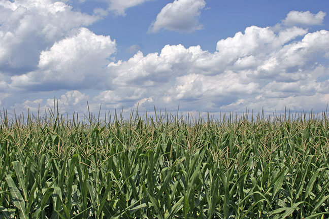
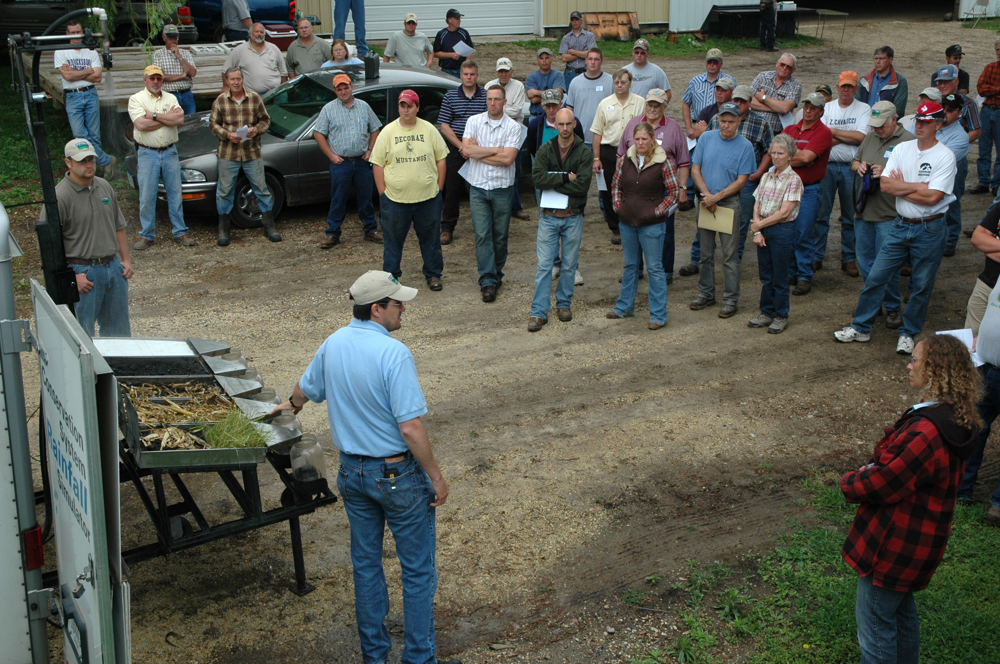
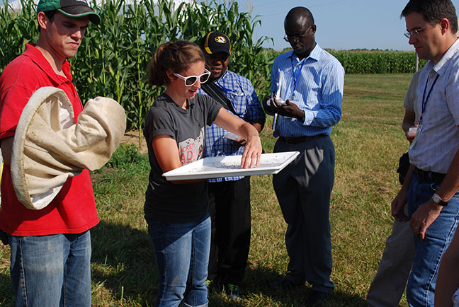
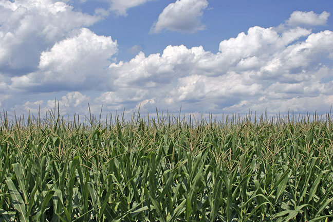
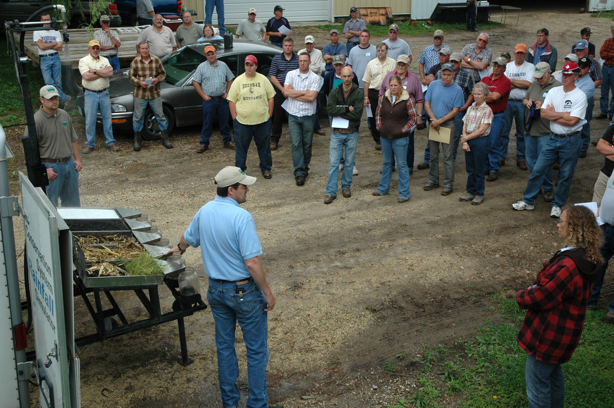
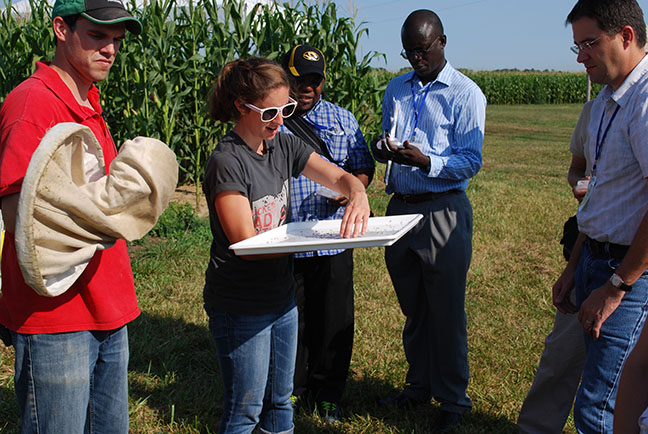
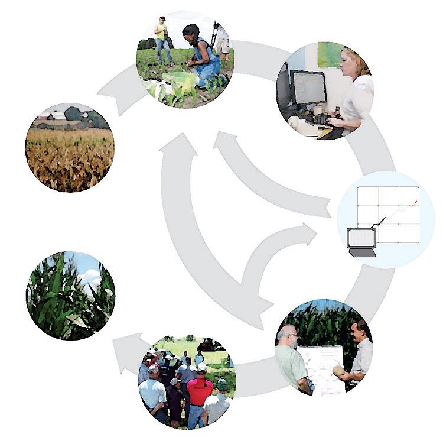

Find us on Twitter
Find us on Twitter 







Findings and Recommendations for Corn Belt FarmersOn February 11, at the University of Minnesota Southwest Research and Outreach Center and via a webinar, we shared some of the results of our five-year, USDA-NIFA research project,which researched farm management practices and their potential for making corn-based agriculture more resilient. Many practices were found to provide resiliency in times of drought, reduce soil and nutrient losses under saturated soil conditions, decrease farm field nitrogen losses, retain carbon in the soil, and ensure crop and soil productivity. The webinar recording is now available. MORE INFORMATION.
Effectively Engaging Producers in Conservation ConversationsFarmers are more uncertain today than 25 years ago about the effectiveness of conservation practices. While that may be discouraging, it also means extension educators and others have an opportunity to share new scientific findings, learn from farmers about what's working and what's not working, and assist them to better manage the natural resources upon which they rely. Emphasis of this webinar recording, which originally aired on February 16, includes findings on farmer uncertainty about conservation practices, using social norms to leverage practices that address off field/off farm nutrient losses, and how the language of conservation can influence social learning and behavior change. The presenter is Lois Wright Morton, sociology professor and the Director of the Sustainable Corn Project. The webinar recording is available at the USDA NRCS Science and Technology website at the following link: http://www.conservationwebinars.net/webinars/effectively-engaging-producers-in-conservation-conversations. Meet the DirectorLeading our team of scientists and specialists is Lois Wright Morton. The USDA recently interviewed her for their series which highlights different leading women in agriculture. Read the interview at http://1.usa.gov/1jYBH39. Climate & Ag Research by Next Generation Scientists Summarized in New Booklet
Learn about research being conducted, by our project's graduate students and post doctoral students, in a new booklet now available for viewing online. The booklet contains 33 research summaries, describing the work of some of the next generation, climate and agriculture scientists, who are currently conducting their research with our project, under the supervision of our Principal Investigators and faculty at participating universities. Click on the image to open and view.
Posters presented by our project's graduate students and post doctoral students, at a symposium in Washington, D.C., are available for viewing and downloading, too. Just click on "Posters" under the publications tab above.
"Soil is Life" Video
Soil quality impacts water resources, biodiversity, food security and climate change. It is the engine of economic development, in relation to agricultural production. In this video presentation Rattan Lal, Principal Investigator with the Sustainable Corn Project and Ohio State University professor, shares key findings of his work with the Sustainable Corn Project and talks about why “soil is life and life is soil.”
|
More about the Sustainable Corn Project...

Project Partners
- Iowa State University
- Lincoln University
- Michigan State University
- The Ohio State University
- Purdue University
- South Dakota State University
- University of Illinois
- University of Minnesota
- University of Missouri
- University of Wisconsin
- USDA Agricultural Research Service, Columbus, Ohio
- USDA National Institute of Food and Agriculture (USDA-NIFA)